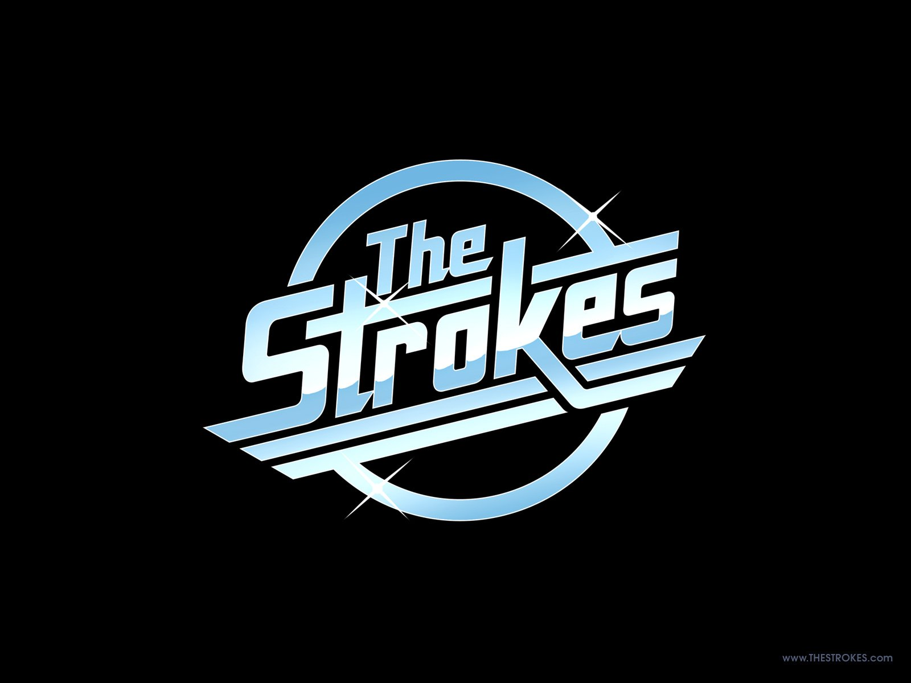

Historia
Inicios y The Modern Age EP (1998–2001)
Julian Casablancas, vocalista del grupo y Nikolai Fraiture, bajista, eran amigos desde la infancia. En el Instituto Le Rosey, en Suiza, Julian y Albert Hammond Jr., uno de los guitarristas, se conocieron.
Años después, Casablancas se encontraría en las calles de New York con Hammond Jr. Albert y Julian Casablancas empezaron a compartir apartamento y en 1999 se convirtieron en una banda oficialmente. Su popularidad creció rápidamente, especialmente en la Lower East Side de Nueva York. Empezaron a ensayar duramente manteniendo sus trabajos de día.
El EP «The Modern Age» fue lanzado en 2001 desatando una guerra de pujas entre las discográficas, por ser, según ellas, la banda de rock and roll más grande que había surgido en años.
Is This It (2001–2002)
The Strokes lanzó su primer álbum Is This It en Estados Unidos en octubre de 2001 bajo el sello RCA, después de algunos retrasos producidos por la portada del disco europeo, y la eliminación del tema "New York City Cops". Esta contenía la frase: "Los policías de Nueva York no son muy inteligentes" ("New York City Cops, they ain't too smart") en el coro, lo que el sello RCA encontró 'políticamente incorrecto' estando tan cercanos los ataques del 11 de septiembre. La canción fue cambiada por otra titulada "When It Started".
El disco recibió muy buenas críticas tanto de publicaciones independientes como de la industria musical, incluyendo 5 estrellas de parte de la revista Rolling Stone. La influencia setentera fue notada por muchos críticos.
Room on Fire (2002–2005)
Room on Fire es el segundo álbum de la banda. Este sigue la misma línea del anterior Is This It, y aunque no fue tan aclamado como el primero, se pueden encontrar canciones como "Reptilia", "12:51", "The End Has No End", "I Can't Win" o "Under Control" de un nivel compositivo similar. Varios medios calificaron este álbum como una repetición de su primer disco.
First Impressions of Earth y descanso (2005–2008)
El disco salió oficialmente en enero de 2006 y rápidamente llegó al puesto número uno en la lista del Reino Unido. Aunque la prensa lo ha visto como un paso adelante de las dos grabaciones anteriores, la recepción de la crítica fue mixta, ya que el característico estilo musical de la banda se vio disminuido. Este disco muestra gran madurez en cada uno de los instrumentos y también gran calidad en las letras de las canciones.
A principios de 2007, la banda de Casablancas tuvo un vuelco y se separó momentáneamente para que cada integrante se dedicase a lo suyo, con el fin de realizar proyectos personales que tenían pendientes desde hace un tiempo
Angles (2009–2011)
Desde que se reunieron el 11 de febrero, comenzaron a componer un nuevo material, este álbum está inspirado en Thin Lizzy, A-ha y Elvis Costello. En una entrevista para la revista Rolling Stone, Julian Casablancas explicó que el grupo se encuentra atrapado entre el futuro y los setenta, y que la comunicación y honestidad entre ellos ha mejorado mucho.
Las respuestas de los medios de comunicación a "Angles" fueron mayormente favorables. En su revisión de cuatro estrellas, David Fricke de Rolling Stone explicó que el disco "vale la pena esperar", y lo resumió como "el primer paso para alejarse del sonido de su debut en un clásico instantáneo.
Comedown Machine (2013-2015)
La respuesta de los medios a Comedown Machine fue en general favorable, la página web, Metacritic, informa una nota media ponderada del 68%, basado en 44 críticas. James Skinner de BBC Music añadió: "A pesar de que un montón de sonidos de la firma del grupo que son los correctos, forman el telón de fondo de una gran variedad inesperada de estilos y enfoques "
Future Present Past EP (2016)
The Strokes lanzó su segundo EP titulado "Future Present Past" el 2 de junio de 2016 a través de Cult Records sello discográfico fundado por Casablancas, el EP contiene 3 temas inéditos y un remix adicional, realizado por el baterista Fabrizio Moretti. El título de cada canción representa: "Drag Queen" se refiere al futuro, "OBLIVIUS" el presente y "Threat Of Joy" el pasado. La presentación de "OBLIVIUS" se hizo a través del programa de Radio Culture Void conducido por Julian Casablancas y emitido por Sirius XM.16 Con tan solo unas horas de diferencia, Cult Records presentaba en su web "Drag Queen" y una hora más tarde colgaban "Threat Of Joy".
para más información haz click en la siguiente imagen
